Multimodal Foundation Models · Project 1
Pre-trained Vision and Vision–Language Models: ViT-B/16 and CLIP
Setup
Code is split into part_1.ipynb (ViT) and part_2.ipynb (CLIP), sharing utils.py. Everything runs with fixed seed 0, and neither model is trained or fine-tuned.
Images. 20 images, 4 per category, sampled with a fixed seed from the validation split of Imagenette, fast.ai's 10-class ImageNet subset (320 px version). They are ImageNet ILSVRC-2012 validation images, used under the ImageNet terms of access (non-commercial research and education). Per-image sources are recorded in image_sources.csv. Because they are validation images, ViT-B/16 was never trained on them. CLIP's training data is not public, so overlap with it cannot be ruled out.
Label mapping (exact torchvision label strings):
| Category | ImageNet WNID | torchvision label | Index |
|---|---|---|---|
| tench | n01440764 | tench | 0 |
| English springer | n02102040 | English springer | 217 |
| cassette player | n02979186 | cassette player | 482 |
| chain saw | n03000684 | chain saw | 491 |
| garbage truck | n03417042 | garbage truck | 569 |
Models and preprocessing.
| ViT (Part 1) | CLIP (Part 2) | |
|---|---|---|
| Checkpoint | torchvision vit_b_16, ViT_B_16_Weights.IMAGENET1K_V1 |
OpenAI CLIP ViT-B/32, jit=False, cast to fp32 |
| Preprocessing | weights.transforms(): resize 256 (bilinear), center crop 224, ImageNet mean/std |
clip.load transform: resize 224 (bicubic), center crop 224, CLIP mean/std |
| Learned logit scale exp(t) | — | 100.0 |
Environment. Google Colab with an NVIDIA Tesla T4 (CUDA). Python 3.13.16, torch 2.11.0+cu130, torchvision 0.26.0+cu130, OpenAI clip 1.0, numpy 2.1.3, pandas 2.2.3, matplotlib 3.10.0, seed 0. Model outputs and embeddings are cached to disk, so each encoder runs once.
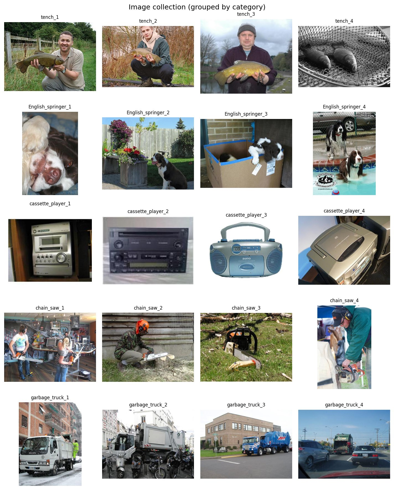
Part 1, Task 1: Image patches and model inputs
A 224 × 224 image cut into 16 × 16 patches gives 196 patches. Adding the CLS token makes the sequence 197 tokens long. I confirmed both inside the real model: the patch projection outputs (1, 196, 768), and a forward hook on the encoder captures an input of (1, 197, 768).
My patchify(img, p) function uses Tensor.unfold twice to cut a (C, H, W) tensor into non-overlapping p × p blocks. It returns them as an (N, C, p, p) tensor in row-major order, the same order in which the ViT flattens its 14 × 14 grid. Each patch holds 3 · 16 · 16 = 768 raw values.
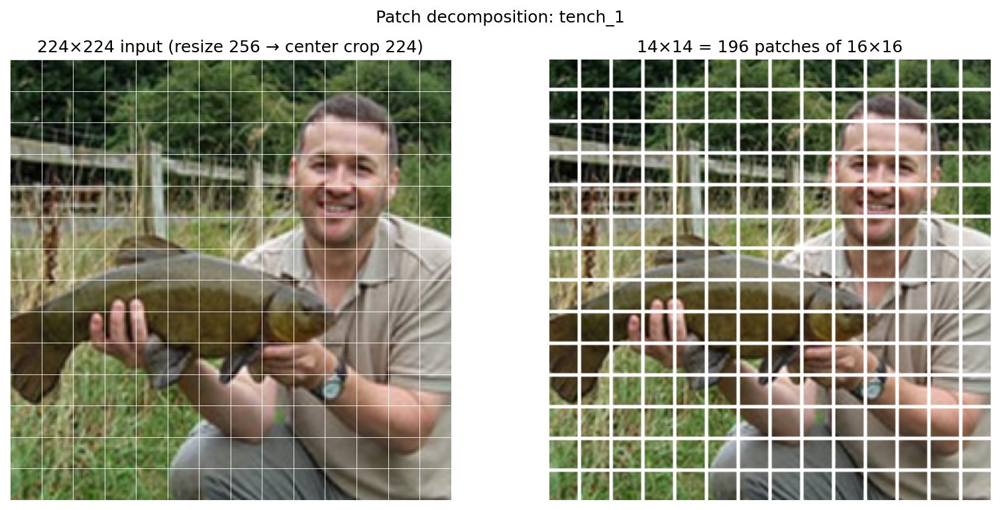
Patch projection. Each flattened 768-value patch xi is mapped to a D = 768 token by one learned linear map shared across all patches. torchvision implements this as a 16 × 16 convolution with stride 16 (conv_proj), which is the same operation. The transformer never sees pixels directly, only these learned embeddings.
Positional embeddings. Self-attention treats its input as an unordered set, so shuffling the patches would give the same output. A learned vector per position (shape 197 × 768) is added to each token so the model knows where each patch came from.
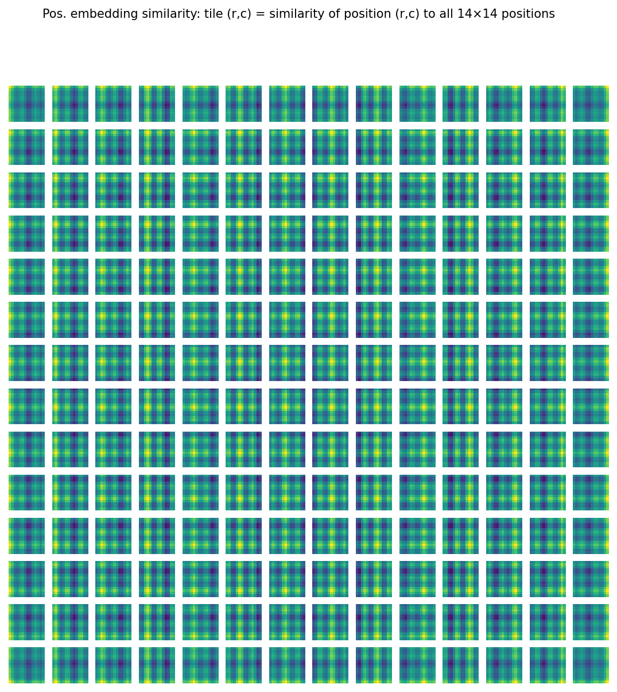
Each tile is brightest along its own row and its own column (a cross pattern), and the cross moves with the tile's position across the grid. The 1-D sequence of learned vectors therefore encodes the image's 2-D row and column layout, which the model learned from data rather than having built in.
CLS token. A learned vector is prepended to the 196 patch tokens. It carries no image content of its own. Through 12 layers of attention it gathers information from every patch, and its final state goes to the classification head (768 → 1000 logits), giving one fixed-size summary of the whole image.
My patches vs. the learned projection. My function only cuts and rearranges pixels. It has no parameters, learns nothing, and its output is still pixel values. The model's projection multiplies each patch by 768 learned filters and outputs a 768-dimensional feature vector that is no longer an image. To connect the two, I flattened my patches of the normalized input and applied conv_proj's weights by hand. The result matches the model's own tokens to floating-point precision (max absolute difference 2.6 × 10⁻⁶), so my patch order and flattening match the model's. The figure below shows the top principal components of the learned filters. As in Fig. 7 of Dosovitskiy et al. (2021), they look like smooth color blobs and low-frequency basis functions, a structure learned in training that my pixel crops do not have.
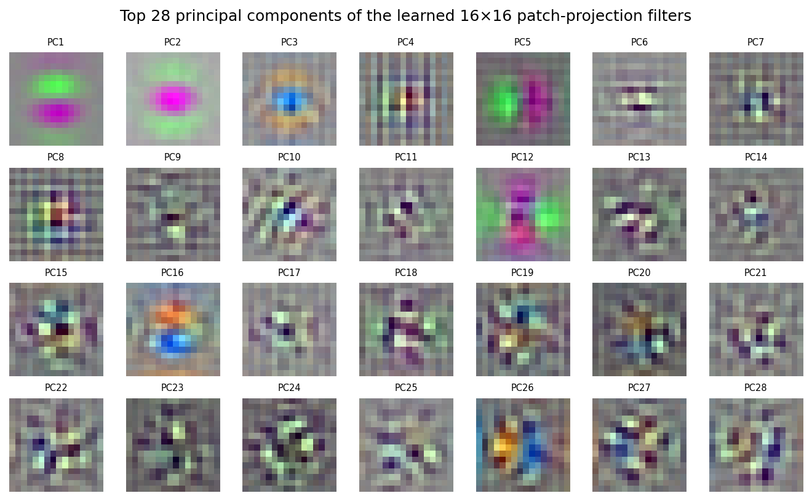
Part 1, Task 2: Predictions on the collection
ViT-B/16 gets 19 of 20 images right: 95% top-1 accuracy (1000-way) and 100% top-5. The one miss is a cassette player predicted as "CD player". Taking the argmax over only our five categories' logits gives 100%.
Top-five predictions (softmax probability over all 1000 classes; bold marks the true class):
| Image | Top-1 | Top-2 | Top-3 | Top-4 | Top-5 |
|---|---|---|---|---|---|
| tench_1 | tench (0.896) | barracouta (0.001) | gar (0.000) | sturgeon (0.000) | goldfish (0.000) |
| tench_2 | tench (0.850) | barracouta (0.002) | monarch (0.001) | slug (0.000) | ringlet (0.000) |
| tench_3 | tench (0.878) | barracouta (0.001) | monarch (0.001) | sulphur butterfly (0.000) | goldfish (0.000) |
| tench_4 | tench (0.883) | strainer (0.029) | coho (0.017) | reel (0.003) | sturgeon (0.002) |
| English_springer_1 | English springer (0.875) | clumber (0.009) | Welsh springer spaniel (0.003) | English setter (0.003) | Saint Bernard (0.002) |
| English_springer_2 | English springer (0.895) | Brittany spaniel (0.003) | ashcan (0.002) | Welsh springer spaniel (0.002) | pot (0.002) |
| English_springer_3 | English springer (0.881) | carton (0.017) | Old English sheepdog (0.015) | Newfoundland (0.011) | Sussex spaniel (0.010) |
| English_springer_4 | English springer (0.683) | Welsh springer spaniel (0.019) | Brittany spaniel (0.008) | Sussex spaniel (0.007) | cocker spaniel (0.004) |
| cassette_player_1 | CD player (0.243) ✗ | tape player (0.221) | cassette player (0.209) | radio (0.205) | cassette (0.007) |
| cassette_player_2 | cassette player (0.715) | tape player (0.140) | cassette (0.028) | CD player (0.016) | radio (0.010) |
| cassette_player_3 | cassette player (0.787) | tape player (0.101) | CD player (0.026) | cassette (0.004) | radio (0.002) |
| cassette_player_4 | cassette player (0.402) | CD player (0.310) | tape player (0.146) | cassette (0.004) | radio (0.001) |
| chain_saw_1 | chain saw (0.825) | toyshop (0.043) | confectionery (0.005) | shoe shop (0.004) | power drill (0.003) |
| chain_saw_2 | chain saw (0.774) | clumber (0.003) | Bouvier des Flandres (0.003) | kuvasz (0.003) | Sealyham terrier (0.002) |
| chain_saw_3 | chain saw (0.847) | hatchet (0.001) | maze (0.001) | worm fence (0.001) | teddy (0.001) |
| chain_saw_4 | chain saw (0.867) | cowboy boot (0.001) | cowboy hat (0.001) | standard schnauzer (0.001) | lumbermill (0.001) |
| garbage_truck_1 | garbage truck (0.893) | snowplow (0.003) | ashcan (0.001) | trailer truck (0.000) | tow truck (0.000) |
| garbage_truck_2 | garbage truck (0.893) | snowplow (0.004) | motor scooter (0.002) | tow truck (0.002) | moped (0.001) |
| garbage_truck_3 | garbage truck (0.902) | trailer truck (0.009) | moving van (0.003) | tow truck (0.001) | crane (0.001) |
| garbage_truck_4 | garbage truck (0.763) | tow truck (0.003) | beach wagon (0.002) | pickup (0.002) | minivan (0.002) |
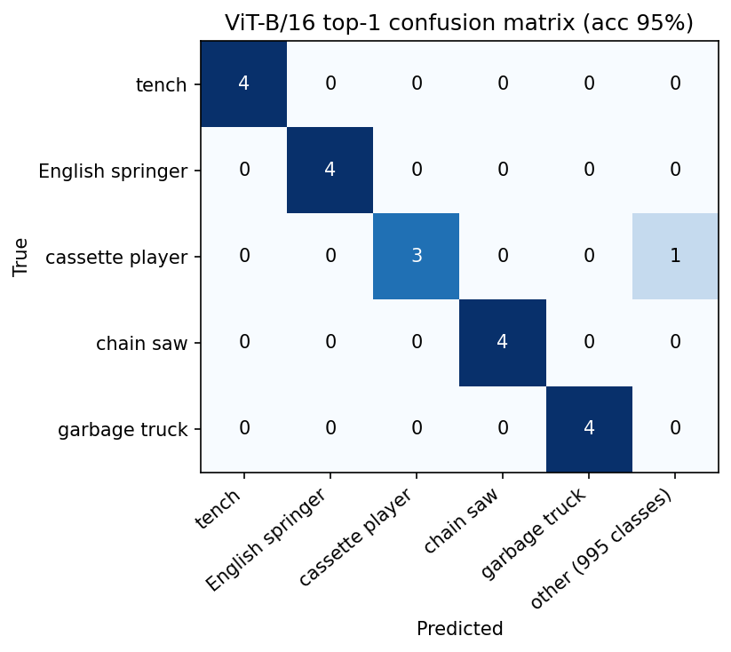
The confusion matrix needs a sixth column, "other", because the model chooses among all 1000 ImageNet classes, not just our five. Four rows are a perfect 4/4. The single error sits in the cassette-player row under "other" (CD player), and no image was confused with another of our five categories.
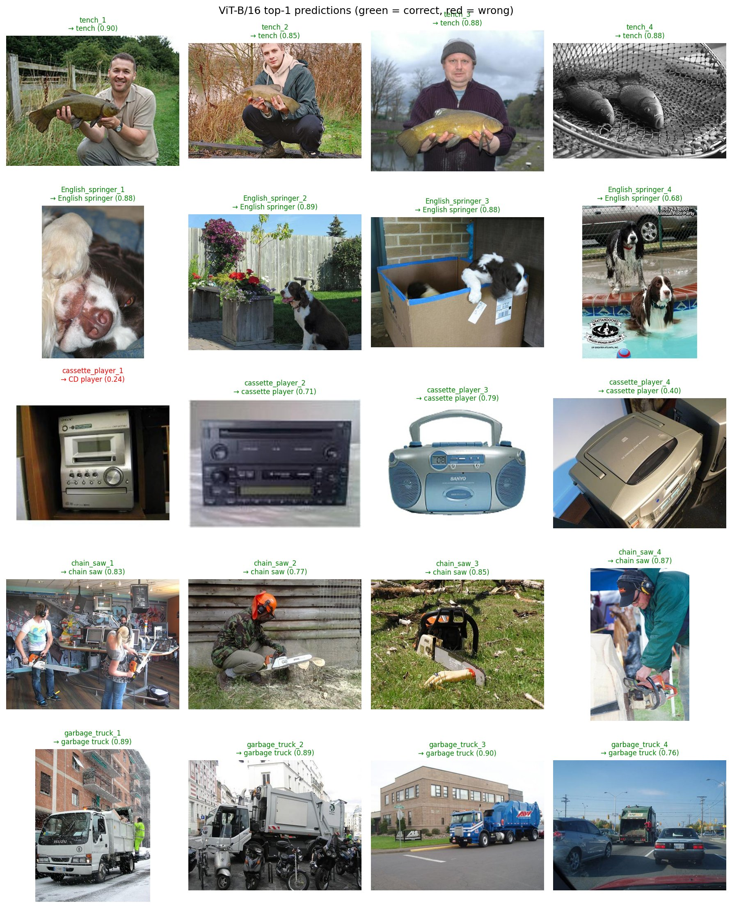
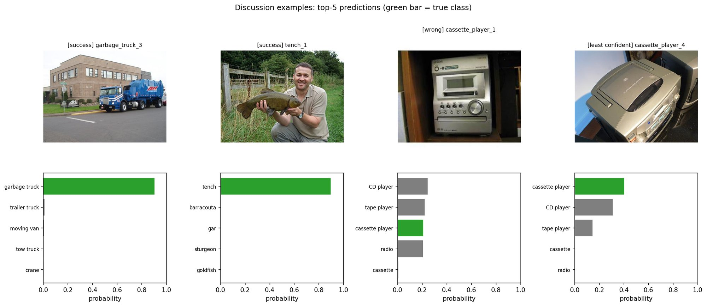
Successful examples. garbage_truck_3 is the most confident prediction (0.902; runner-up "trailer truck" at 0.009). It shows a full side view of a large, uncluttered garbage truck centered in the frame, a canonical view. tench_1 (0.896) is the classic angler "trophy shot" of a man holding the fish toward the camera. All its runners-up are other fish (barracouta, gar, sturgeon), so the model recognizes the object type, not just a person outdoors. Context still matters: in tench_4, a grayscale photo of two fish in a landing net with no person, tench still wins (0.883), but the next guesses are "strainer" and "reel". The net's mesh texture and the fishing context pull in related classes.
Incorrect and uncertain examples. cassette_player_1 is the only error. Four classes nearly tie: CD player 0.243, tape player 0.221, cassette player 0.209, radio 0.205. The photo is a compact hi-fi unit that physically contains a CD player, a tape deck and a radio, so each of those labels is partly correct, yet a single-label softmax must pick one winner. cassette_player_4 is correct but uncertain (0.402 vs CD player 0.310). It is a close-up from above whose most visible part is a lid that looks like a CD drive's. Both cases come from ImageNet's fine-grained, overlapping electronics classes rather than a failure to recognize the object. The lowest-confidence dog, English_springer_4 (0.683), shows two dogs in a pool with a club logo printed on the image. Its alternatives are all spaniel breeds, another fine-grained neighborhood.
Limits of a fixed label set. The head is a fixed linear layer onto exactly 1000 ImageNet classes, so every answer is one of those labels, with probabilities summing to 1 across them. The model cannot say "none of these," name a new category (e.g. "leaf blower" or "recycling truck" if absent), or answer anything that isn't "which of the 1000 classes?". It cannot handle attributes, counts, actions or relations ("is the dog wet?", "how many fish?", "is the person holding the chain saw?"), or multiple objects, since softmax forces one winner. Our own error shows this: cassette_player_1 is a CD player, tape player, cassette player and radio at once, but the head can return only one. It also cannot change granularity: "dog" vs "springer" depends on how ImageNet happened to define its classes. Asking a new question requires new labeled data and retraining or replacing the head. CLIP in Part 2 lifts this by matching against arbitrary text.
Part 2, Task 1: Similarity calculation
My hand-written pipeline reproduces CLIP's built-in logits_per_image up to floating-point error (max absolute difference 1.6 × 10⁻⁵ on logits of about 10–35, i.e. float32 rounding; allclose with atol 1e-3 is True). Predictions are identical, and logits_per_text is exactly its transpose. With the template "a photo of a {}", zero-shot accuracy is 100% (20/20).
The image and text encoders each output a 512-d vector: u for the image and vj for each candidate text. I implemented four steps:
- L2 normalization: divide each embedding by its length so every vector lies on the unit sphere.
- Cosine similarity matrix: with unit vectors, the dot product is the cosine. Computing it for all pairs gives an (images × texts) matrix with values in [−1, 1].
- Logits: multiply by the checkpoint's learned temperature exp(t) = 100.0 (t = ln 100, CLIP's trained maximum).
- Softmax and prediction: softmax across the candidate texts for each image, then take the argmax as the predicted category.
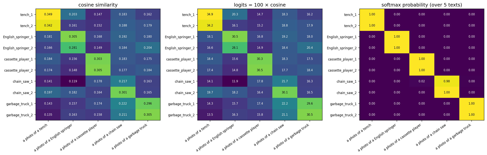
Cosine vs. logits vs. probabilities. Cosine similarity is an absolute, per-pair score of how aligned an image and a text are. For CLIP the values fall in a narrow band. In the subset, correct pairs score 0.22–0.35 and wrong pairs 0.12–0.22, so the right answer can lead by only a few hundredths: chain_saw_1 scores 0.217 with its own prompt vs 0.178 for "cassette player". Logits are the same numbers times 100. The ranking is unchanged, but chain_saw_1's 0.039 cosine gap becomes a 3.9-logit gap (21.7 vs 17.8), which softmax turns into 0.98 vs 0.02. The model learned this scale in contrastive training to make the softmax sharp. Probabilities are the softmax over the logits. They are relative: each row sums to 1 across the candidates given, and they say which candidate wins and by how much, not how well the image matches in an absolute sense.
Why probabilities depend on the candidate set. The softmax denominator sums over whatever texts are supplied. Adding, removing or rewording a candidate changes every probability in the row, even though the image-to-true-text cosine stays the same. My test on one image:
| Candidate texts ("a photo of a …") | cos(image, true text) | P(true text) |
|---|---|---|
| the 5 categories | 0.3051 | 1.000 |
| English springer + tench only | 0.3051 | 1.000 |
| the 5 categories + "dog" | 0.3051 | 0.989 |
The image is English_springer_1. Its cosine with the true text is identical in every row; only the softmax probability changes. With the original candidates the probability saturates at 1.000 because the other four texts are far away. Adding "dog", which also correctly describes this image, takes about 1% of the mass. If the candidate list included many dog breeds, the probability would drop much further without the image or the springer text changing at all. A high probability means "best among these options," not an absolute confidence that the image is a springer.
Part 2, Task 2: Prompt wording
All three templates reach 100% accuracy (20/20), and no single prediction changes with wording. Wording does change the scores: the mean cosine with the true class rises from 0.281 (bare name) to 0.296 ("a photo of a") to 0.307 ("an image showing a").
| Template | Accuracy | Mean P(true class) | Mean cosine (true class) |
|---|---|---|---|
{category} |
100% | 0.990 | 0.281 |
a photo of a {category} |
100% | 0.995 | 0.296 |
an image showing a {category} |
100% | 0.995 | 0.307 |
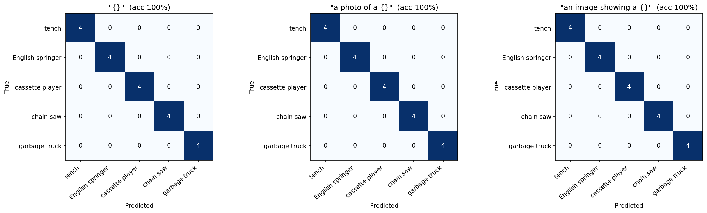
Since no prediction flips, the examples below show the largest changes in the true-class probability:
| Image | P(true): {} |
P(true): "a photo of a" | P(true): "an image showing a" |
|---|---|---|---|
| chain_saw_1 | 0.921 | 0.976 | 0.954 |
| chain_saw_4 | 0.922 | 0.931 | 0.961 |
| English_springer_3 | 0.980 | 0.997 | 0.993 |
| cassette_player_4 | 0.984 | 0.993 | 0.997 |
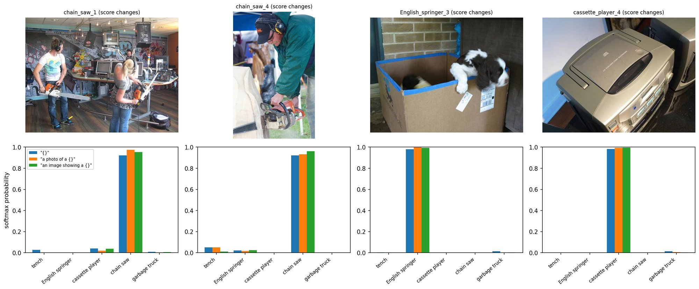
The bare category name gives the lowest probability on all four of these images. Neither full-sentence template wins everywhere: "a photo of a" is best for chain_saw_1 and English_springer_3, and "an image showing a" for chain_saw_4 and cassette_player_4. The hardest images are cluttered ones, such as chain_saw_1 (two people holding chain saws in a busy radio studio) and English_springer_3 (a puppy half-hidden in a cardboard box). Wording shifts their scores the most.
Why wording matters. CLIP was trained on internet alt-text, where a bare word like "tench" or "chain saw" rarely appears alone, while captions like "a photo of a …" are common. A full sentence moves the text embedding closer to where real captions sit. It also disambiguates rare or polysemous words: "tench" is an obscure fish name, and "English springer" alone does not say dog. Our numbers fit this. Both sentence templates raise the true-class cosine on average and help most on the hardest images. The effect stays small here only because our five categories look very different from each other; with visually similar classes, a shift of a few hundredths in cosine can flip predictions.
Prompting vs. fine-tuning. Every template runs through the same frozen weights. Changing the prompt only changes the input to the text encoder, which produces different class vectors (the text embeddings act as the weights of a zero-shot classifier). Nothing the model learned is altered; it needs no labeled data or gradients, and it can be undone instantly. Fine-tuning runs gradient descent on labeled examples and changes the parameters themselves. That changes how every image and text is encoded, which can improve this task while hurting others, and it needs data and compute.
Comparison with Part 1.
| Model | Candidate labels | Top-1 accuracy |
|---|---|---|
| ViT-B/16, ImageNet-1k supervised | 1000 ImageNet classes | 95% |
| ViT-B/16, argmax over our 5 classes only | 5 | 100% |
CLIP ViT-B/32 zero-shot, {} |
5 prompts | 100% |
| CLIP ViT-B/32 zero-shot, "a photo of a {}" | 5 prompts | 100% |
| CLIP ViT-B/32 zero-shot, "an image showing a {}" | 5 prompts | 100% |
When both models choose among the same five categories, both get every image right. ViT's one 1000-way error came from its label set containing near-synonyms (CD player, tape player, radio) that CLIP was never asked to choose between. Had we added those texts to CLIP's candidates, it might face the same ambiguity; we did not test this.
The numbers are still not directly comparable. ViT-B/16 was trained with supervised cross-entropy on the 1.28M labeled ImageNet images. CLIP ViT-B/32 was trained contrastively on 400M web image–caption pairs, and its zero-shot candidates here are only 5 prompts, a much easier forced choice. The models also use different patch sizes (16 vs 32). With 20 easy, visually distinct images, both are at or near ceiling, and one image equals 5 percentage points. This experiment cannot show that either model is generally better.
Part 2, Task 3: The representation space
Normalized CLIP image embeddings are much more similar within a category (mean 0.684) than across categories (mean 0.443), so the five categories form clear blocks. Category is not the whole story, though. The most similar cross-category pair (0.593) beats the least similar same-category pair (0.504), and composition, scene and color all leave visible traces.
The matrix is computed exactly as in Task 1, with images in place of texts:
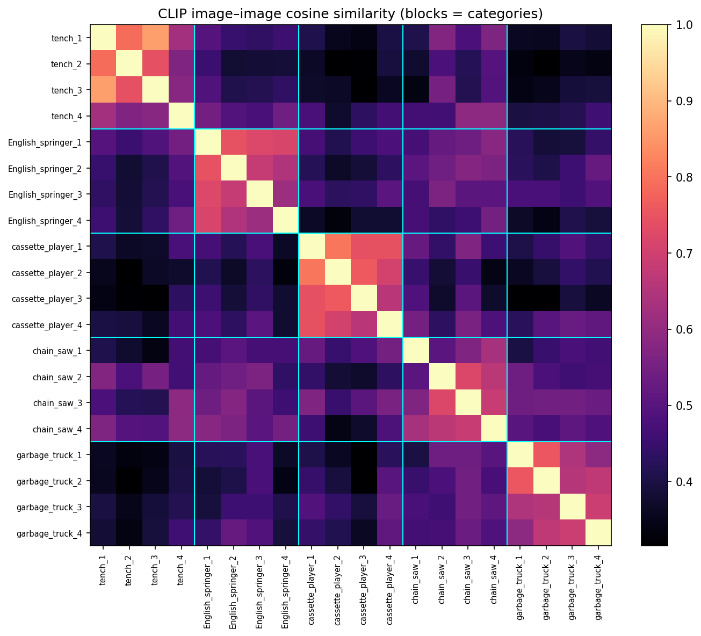
Mean similarity between category blocks (the diagonal excludes each image's similarity with itself):
| tench | English springer | cassette player | chain saw | garbage truck | |
|---|---|---|---|---|---|
| tench | 0.695 | 0.453 | 0.378 | 0.481 | 0.374 |
| English springer | 0.453 | 0.689 | 0.420 | 0.516 | 0.430 |
| cassette player | 0.378 | 0.420 | 0.737 | 0.461 | 0.422 |
| chain saw | 0.481 | 0.516 | 0.461 | 0.629 | 0.492 |
| garbage truck | 0.374 | 0.430 | 0.422 | 0.492 | 0.668 |
Cassette players form the tightest group (0.737) and chain saws the loosest (0.629). Chain saw is also the category most similar to every other one (0.46–0.52 across its row). Its photos show people, grass, wood and indoor clutter, scenes that overlap with the other categories. The most distant pair of categories is tench vs garbage truck (0.374).
Similar images within a category.
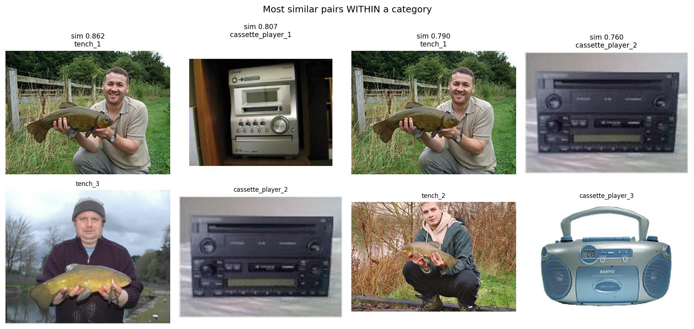
The top pair is tench_1 and tench_3 (0.862). Beyond the fish species, they share the whole composition: a man facing the camera, holding the fish horizontally at chest height, outdoors. Next come cassette_player_1 and cassette_player_2 (0.807), two front-facing silver/black panels full of buttons and displays.
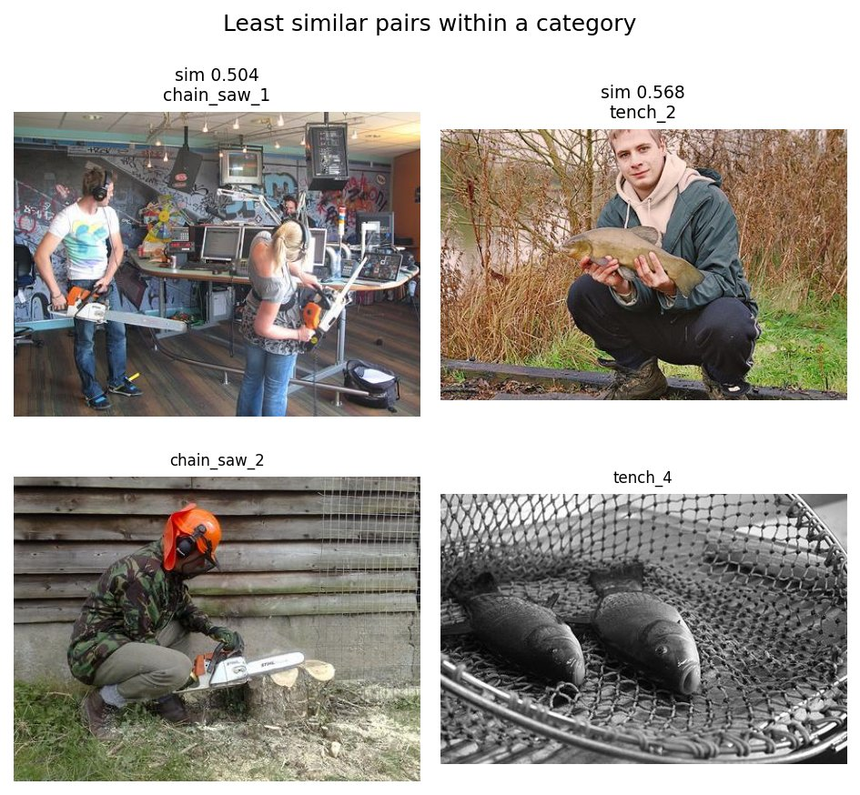
The least similar same-category pair is chain_saw_1 and chain_saw_2 (0.504). Both contain a chain saw, but one shows two people in a cluttered indoor radio studio and the other a lone worker cutting a stump outdoors. Next is tench_2 vs tench_4 (0.568): a color photo of a person posing with a fish vs a grayscale close-up of two fish in a landing net with no person.
Unexpectedly similar images across categories.
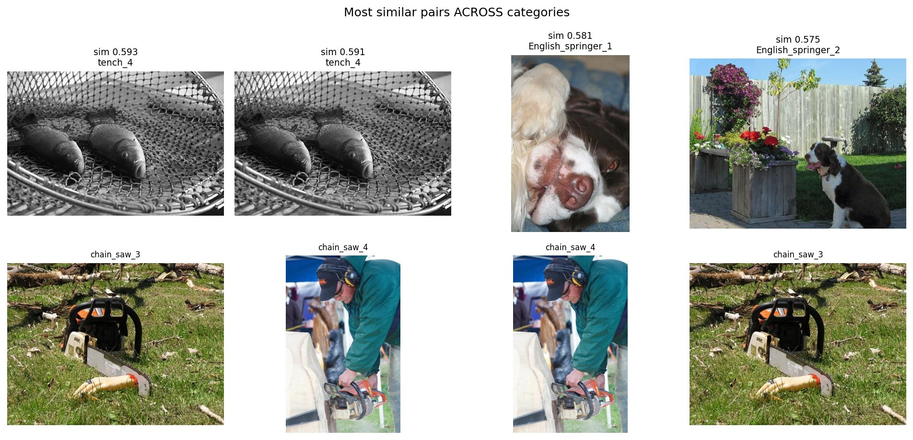
All four of the top cross-category pairs involve a chain saw image. tench_4 matches chain_saw_3 (0.593) and chain_saw_4 (0.591). The shared property I can see in tench_4 and chain_saw_3 is layout and texture: a dark, elongated object lying on a busy textured surface (net mesh, twig-strewn grass). English_springer_2 matches chain_saw_3 (0.575); both are sunny outdoor scenes on a green lawn. English_springer_1 matches chain_saw_4 (0.581). In chain_saw_4 the man is carving a wooden sculpture, and a dark, animal-shaped figure stands in the background, which may pull it toward the dog images. These explanations are my reading of the images, not something the embedding tells us directly.
What drives the similarity. The main object is the strongest factor: every within-category block (0.63–0.74) beats every cross-category block (0.37–0.52). After that, three secondary factors appear in our examples:
- Composition and pose. A person holding the object toward the camera makes tench_1 and tench_3 nearly identical.
- Scene and background. An indoor vs outdoor setting splits chain_saw_1 from chain_saw_2, and shared lawns link springer and chain-saw photos.
- Color and rendering. The grayscale tench_4 is part of the second-least similar tench pair.
What CLIP's representation captures here. CLIP's image embedding is organized first by the main object category, which is why zero-shot classification with five distinct categories reached 100%. Because CLIP learned from whole photos paired with captions, the embedding also encodes how the photo looks: the setting, whether people are present and what they are doing, the layout and the color. These cues can make images of different objects fairly close, and images of the same object fairly far apart. This conclusion rests on 20 images, four per category, so it describes these examples, not CLIP in general.
References
- A. Dosovitskiy et al., "An Image is Worth 16x16 Words: Transformers for Image Recognition at Scale," ICLR 2021.
- A. Radford et al., "Learning Transferable Visual Models From Natural Language Supervision" (CLIP), ICML 2021.
- J. Howard, Imagenette dataset, fast.ai, https://github.com/fastai/imagenette.
- O. Russakovsky et al., "ImageNet Large Scale Visual Recognition Challenge," IJCV 2015.